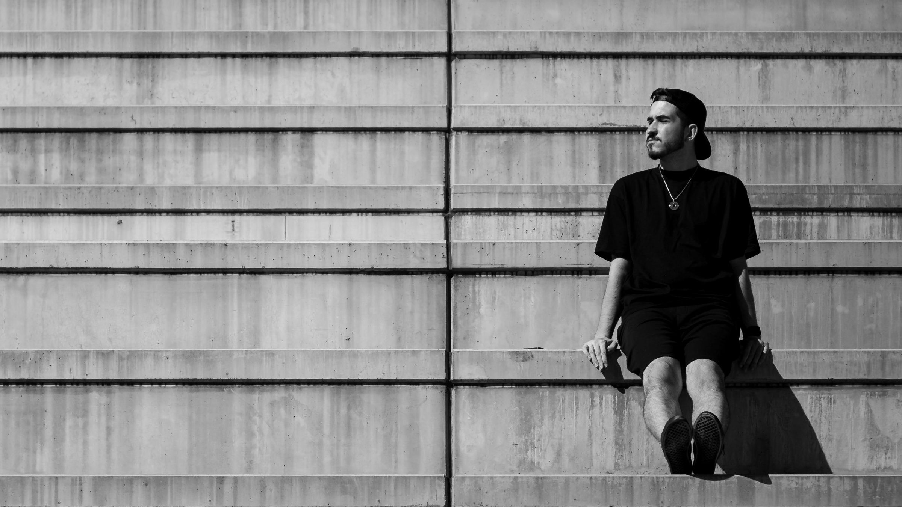

Venira
Videomaker a grafik · září 2025 – současnost

Fotograf, videomaker a grafik z Ostravy. Kromě fotek točím videa a navrhuji vizuální identity značek.
Zakázky, u kterých stojí za to ukázat víc než jednu fotku.
Doma mám staré foťáky po tátovi. Fotil jako koníček, stejně jako děda. I když už tu nejsou, pozorovat svět mě naučili právě oni, skrze staré fotografie, které po nich zůstaly. Aktivně fotím od roku 2017 a postupně jsem k tomu přidal video a grafický design.
Miluju geometrii, křivky a vertikály v architektuře, ale stejně tak přírodu a barvy oblohy při východu nebo západu slunce. Vracím se ke starým fotkám Sudka a Drtikola nebo k solarizacím Man Raye. A často mě táhne téma samoty ve velkém světě.
Nejradši fotím lidi, kteří mají za sebou silný příběh, vlastní vizi a nebojí se experimentovat. Prý mají moje fotky duši. Snažím se, aby v nich byly opravdové emoce a výrazný kontrast.

Videomaker a grafik · září 2025 – současnost
Reportážní fotografie
1 měsíc
1 měsíc
Fotografie · 2 týdny
Animace pro projekt
Photoshop, Lightroom, Illustrator, InDesign, Premiere Pro, After Effects, DaVinci Resolve, Firefly, Figma, UXPin, Blender, Claude a ChatGPT
Fotil jsem vás? Budu rád za pár slov.
Recenze se na webu objeví po schválení.
Otevřete e-mail a odešlete ho, případně text zkopírujte a pošlete na zajicekkuba@seznam.cz. Recenzi zveřejním po schválení.
Otevřít e-mailCenu připravuji vždy na míru. Záleží na rozsahu a náročnosti projektu, na tom, kde a jak se výsledky použijí. Napište mi, co máte v plánu, a pošlu vám nabídku.
Nezačínáme hned focením. Nejdřív si popovídáme, zjistím, jaký styl fotek se vám líbí, a pustíme si hudbu, kterou máme rádi. Uvolněný člověk je ten nejlepší model. Samotné focení trvá zhruba hodinu a půl a na stylu, oblečení a místě se domluvíme předem. Z focení dostanete 10 nejlepších fotografií v plné úpravě, případně více dle domluvy.
Hotové fotografie většinou dodávám do týdne od focení. U větších projektů se na termínu domluvíme předem.
Sídlím v Ostravě, ale za zajímavým projektem rád vycestuji. Případné cestovné zahrnu do nabídky.
Ano. Rozsah použití si domluvíme předem a zohledním ho v nabídce.
Napište mi přes formulář níže, na instagram, e-mailem nebo na WhatsApp: co potřebujete, kdy a kde, a pokud máte, i představu o rozpočtu.
Klidně i s neurčitou představou. Nejradši fotím portréty na místech, která mají atmosféru, ať je to industriál v Ostravě, nebo hory. Ozvat se můžete i s videem nebo grafikou.
Otevře se vaše e-mailová aplikace s předvyplněnou zprávou.